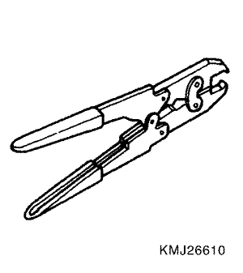

Captiva | ||||||||
| ||||||||
| Aplicación | Descripción | ||||
| Capacidad | 0,63 litros | ||||
| Lubricante | Aceite de la dirección asistida DEXRON®-IID | ||||
| Tipo | Cremallera y piñón | ||||
| Avance de cremallera | 49,48 mm/rev. | ||||
| Carrera de cremallera | 158 ± 1.6 mm | ||||
Ángulo de dirección | Interior | 36.5° | |||
Exterior | 29.8° | ||||
| Aplicación | N•m | Árbol de transmisión izquierdo | Articulación |
| Tornillos del soporte del módulo de control del SSPS | 10 | 7 | - |
| Racores de la tubería del cilindro hidráulico - lado del cilindro | 19 | 14 | - |
| Racores de la tubería del cilindro hidráulico - lado de la válvula | 19 | 14 | - |
| Tornillos de sujeción del eje intermedio - superiores e inferiores | 34 | 25 | - |
| Tuerca de ajuste del tirante exterior | 60 | 44 | - |
| Tuercas del tirante exterior | 50 | 37 | - |
| Racores de los tubos de entrada y salida del mecanismo de dirección | 28 | 21 | - |
| Tornillos de fijación del mecanismo de la dirección | 110 | 81 | - |
|   | KM-J-26610 Instalador |
| Comprobaciones | Medida |
| Compruebe si las juntas del eje intermedio están flojas. | Apriete las juntas del eje intermedio. |
| Compruebe si el manguito de la dirección asistida entra en contacto con otros elementos. | Asegúrese de que el manguito de la dirección asistida esté correctamente sujeto con los clips. |
| Comprobaciones | Medida |
| Compruebe si el manguito de la dirección asistida entra en contacto con el cuerpo. | Asegúrese de que el manguito de la dirección asistida esté correctamente sujeto con los clips. |
| Compruebe si el mecanismo de la dirección presenta una lubricación insuficiente. | Lubrique el mecanismo de dirección. |
| Compruebe si la fijación del mecanismo de la dirección está mal montada. | Apriete las tuercas y tornillos del soporte de fijación de la dirección asistida. |
| Compruebe si los tirantes exteriores están mal montados. | Apriete las juntas de los tirantes exteriores. Sustituya los tirantes exteriores. |
| Comprobaciones | Medida |
| Compruebe si el volante entra en contacto con el alojamiento de los intermitentes. | Ajuste el alojamiento de los intermitentes. |
| Compruebe si las juntas del eje intermedio presentan agarrotamiento o si están sueltas. | Sustituya el eje intermedio. |
| Compruebe si la válvula reguladora de caudal de la bomba de la dirección asistida está agarrotada o mal alineada. | Sustituya la bomba de la dirección asistida. |
| Compruebe la alineación de las ruedas. | Efectúe la alineación de las ruedas. |
| Compruebe si los cojinetes de rueda están desgastados o dañados. | Sustituya los cojinetes de rueda. |
| Compruebe si las juntas del eje intermedio están montadas incorrectamente. | Ajuste el eje intermedio entre el mecanismo de la dirección y la columna de la dirección. Sustituya el eje intermedio. |
| Compruebe si los tirantes exteriores y las rótulas están agarrotados o flojos. | Apriete los tirantes y las rótulas. Sustituya los tirantes y las rótulas. |
| Compruebe los ajustes del mecanismo de la dirección. | Efectúe una comprobación de la marcha en línea recta. |
| Compruebe si el retén del eje de la columna de la dirección roza en el eje. | Sustituya el retén. |
| Compruebe si los cojinetes del eje de la dirección están agarrotados. | Sustituya los cojinetes de la mangueta. |
| Comprobaciones | Medida |
| Compruebe si la bomba de la dirección asistida presenta fugas internas. | Sustituya la bomba de la dirección asistida. |
| Compruebe si los manguitos están dañados o presentan un caudal limitado. | Sustituya los manguitos y/o tubos de la dirección asistida. |
| Compruebe el nivel de aceite de la dirección asistida. | Llene el depósito de líquido de la dirección asistida. |
| Compruebe si la válvula reguladora de caudal de la bomba de la dirección asistida está agarrotada o si funciona incorrectamente. | Sustituya la bomba de la dirección asistida. |
| Comprobaciones | Medida |
| Compruebe si no hay suficiente presión en la bomba de la dirección asistida. | Sustituya la bomba de la dirección asistida. |
| Compruebe si la válvula reguladora de caudal de la bomba de la dirección asistida está agarrotada o si funciona incorrectamente. | Sustituya la bomba de la dirección asistida. |
| Compruebe si patina la correa de accionamiento de la bomba de la dirección asistida. | Tense la correa de accionamiento de la dirección asistida. |
| Compruebe si hay aire en el sistema de dirección asistida. | Purgue el sistema de dirección asistida. |
| Comprobaciones | Medida |
| Compruebe si hay aire en el sistema de dirección asistida. | Purgue el sistema de dirección asistida. |
| Compruebe si la correa de accionamiento de la bomba de la dirección asistida está floja. | Tense la correa de accionamiento de la dirección asistida. |
| Comprobaciones | Medida |
| Compruebe si hay aire en el sistema de dirección asistida. | Purgue el sistema de dirección asistida. |
| Compruebe si los cojinetes de rueda están desgastados o dañados. | Sustituya los cojinetes de rueda. |
| Compruebe si la fijación del mecanismo de la dirección está mal montada. | Apriete las tuercas y tornillos del soporte de fijación de la dirección asistida. |
| Compruebe si las juntas del eje intermedio están montadas incorrectamente. | Ajuste el eje intermedio entre el mecanismo de la dirección y la columna de la dirección. Sustituya el eje intermedio. |
| Compruebe si los tirantes exteriores y las rótulas están flojos. | Apriete los tirantes y las rótulas. Sustituya los tirantes y las rótulas. |
| Comprobaciones | Medida |
| Compruebe si las juntas del eje intermedio están montadas incorrectamente. | Ajuste el eje intermedio entre el mecanismo de la dirección y la columna de la dirección. Sustituya la brida de acoplamiento. |
| Compruebe si la válvula reguladora de caudal de la bomba de la dirección asistida está agarrotada o montada incorrectamente. | Sustituya la bomba de la dirección asistida. |
| Compruebe si no hay suficiente presión en la bomba de la dirección asistida. | Sustituya la bomba de la dirección asistida. |
| Compruebe si la bomba de la dirección asistida presenta fugas internas. | Sustituya la bomba de la dirección asistida. |
| Compruebe si el eje intermedio está flojo o desgastado. | Apriete el eje intermedio. Sustituya el eje intermedio si fuera necesario. |
| Compruebe la tensión de la correa de accionamiento de la bomba de la dirección asistida. | Tense la correa de accionamiento de la dirección asistida. |

| Paso | Medida | Valor(es) | Sí | No |
| 1 | Lleve a cabo una inspección inicial del sistema de dirección asistida. ¿Funciona el sistema? | - | Vaya al Paso 2 | Consulte la Sección 6A, Sistema de dirección asistida |
| 2 |
¿Muestra el scanner algún DTC? | - | Vaya a la Lista de códigos de diagnóstico de averías (DTC) | Vaya al Paso 3 |
| 3 | Compruebe si hay alguna mala conexión en el módulo de control del ABS. ¿Se ha encontrado y corregido la anomalía? | - | - | Vaya al Paso 4 |
| 4 |
¿Se aproxima la resistencia a 0? | ≈ 0 Ω | Vaya al Paso 5 | Vaya al Paso 6 |
| 5 | Sustituya o repare los cables dañados. | - | - | - |
| 6 | Sustituya el módulo de control del SSPS. | - | - | - |
| Paso | Medida | Valor(es) | Sí | No |
| 1 | Compruebe si el circuito de señal de velocidad del vehículo del módulo de control está interrumpido o en cortocircuito con la tensión. ¿Se ha encontrado y corregido la anomalía? | - | Sistema OK | Vaya al Paso 2 |
| 2 | Desconecte el actuador por solenoide del SSPS del mecanismo de la dirección asistida. ¿Persiste el síntoma? | - | Consulte la Sección 6A, Sistema de dirección asistida | Vaya al Paso 3 |
| 3 | Sustituya el módulo de control del SSPS. ¿Se ha realizado la reparación? | - | Sistema OK | - |
DTC | Avería | Acción por defecto |
01 | Circuito del actuador abierto o en cortocircuito | Luz de aviso encendida, actuador apagado |
02 | Tensión de la batería fuera de intervalo | . |
| Paso | Medida | Valor(es) | Sí | No |
| 1 |
| - | Vaya al Paso 2 | - |
| 2 | Seleccione en el scanner la función de visualización de DTCs del SSPS. ¿Muestra el scanner algún DTC? | - | Vaya a la Lista de códigos de diagnóstico de averías (DTC) | Consulte Síntomas - Sistema de dirección asistida |
| Paso | Medida | Valor(es) | Sí | No |
| 1 | ¿Realizó la comprobación del sistema de diagnóstico del sistema de control electrónico de la dirección asistida variable? | - | Vaya al Paso 2 | Ir a |
| 2 | Compruebe si hay alguna mala conexión en el módulo de control del SSPS o en el actuador de la válvula de control. ¿Se ha encontrado y corregido la anomalía? | - | Vaya al Paso 3 | - |
| 3 |
¿Está la resistencia dentro de los valores especificados? | 1.5 - 3.5 Ω | Vaya al Paso 6 | Vaya al Paso 4 |
| 4 |
¿Se aproxima la resistencia a 0? | ≈ 0 Ω | Vaya al Paso 5 | Vaya al Paso 8 |
| 5 | Compruebe la resistencia entre los terminales A y B del actuador. ¿La resistencia está dentro del valor especificado? | 1.5 - 3.5 Ω | Vaya al Paso 6 | Vaya al Paso 7 |
| 6 |
¿Es la resistencia ∞? | ∞ | Vaya al Paso 11 | Vaya al Paso 8 |
| 7 | Compruebe si existe cortocircuito entre los terminales A y B del cableado del actuador. ¿Está el cableado en cortocircuito? | - | Vaya al Paso 9 | Vaya al Paso 10 |
| 8 | Sustituya o repare los cables dañados. | - | - | - |
| 9 | Repare el cableado del actuador. | - | - | - |
| 10 | Sustituya el actuador (mecanismo de la dirección). | - | - | - |
| 11 | Sustituya el módulo de control del SSPS. | - | - | - |
| Paso | Medida | Valor(es) | Sí | No |
| 1 | ¿Realizó la comprobación del sistema de diagnóstico del sistema de control electrónico de la dirección asistida variable? | - | Vaya al Paso 2 | Ir a |
| 2 | Compruebe si hay alguna mala conexión en el módulo de control del SSPS o en el actuador de la válvula de control. ¿Se ha encontrado y corregido la anomalía? | - | Vaya al Paso 3 | - |
| 3 |
¿Está la tensión dentro de los valores especificados? | 9 - 16 V | Vaya al Paso 4 | Vaya al Paso 5 |
| 4 | Compruebe la tensión entre los terminales 8 y 10 del cableado del módulo de control. ¿Está la tensión dentro de los valores especificados? | 9 - 16 V | Vaya al Paso 9 | Vaya al Paso 8 |
| 5 | Compruebe la resistencia entre el terminal 43 del bloque de fusibles del panel de instrumentos y el terminal 8 del conector del cableado del módulo de control. ¿Se aproxima la resistencia a 0? | ≈ 0 Ω | Vaya al Paso 6 | Vaya al Paso 8 |
| 6 | Compruebe el fusible F15. ¿Está fundido el fusible? | - | Sustituya el fusible F15. | Vaya al Paso 7 |
| 7 | Compruebe el sistema de carga del vehículo incluido el alternador. Consulte la sección 1E, Sistema eléctrico del motor. ¿Está bien el sistema de carga? | - | Vaya al Paso 9 | Repare el sistema de carga. |
| 8 | Sustituya o repare los cables dañados. | - | - | - |
| 9 | Sustituya el módulo de control del SSPS. | - | - | - |
| © Copyright Chevrolet Europe. Reservados todos los derechos |